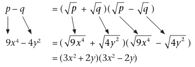
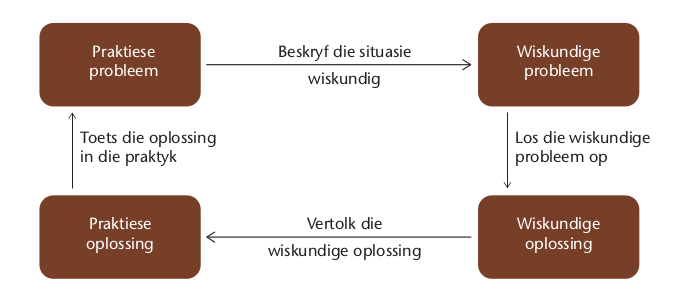

Vergelykings
Jy het alreeds vergelykings deur inspeksie en inverse bewerkings in die eerste kwartaal opgelos. In hierdie hoofstuk gaan ons eers die werk hersien. Daarna gaan jy werk met vergelykings wat produkuitdrukkings, soos \(2x(x - 2) \) en \( (x - 5)(x + 3) \).bevat. Jy gaan nuwe metodes leer om vergelykings op te los, gebaseer op die feit dat, as die produk van twee uitdrukkings (of getalle) nul is, een of albei van die uitdrukkings (of getalle) nul moet wees. Jy gaan faktorisering gebruik om vergelykings in die vorm \(pq = 0\) op te stel sodat jy hulle kan oplos.
Inleiding
Oplos deur inspeksie:
1.Voltooi die volgende tabel. Bepaal die korrekte \(x\)-waardes deur die gegewe waardes vir x in die vergelyking te gebruik om te sien of dit die x-waarde is wat die stelling waar maak.
Jy kan die oplossings van ʼn vergelyking van ʼn tabel af lees.
|
Vergelyking |
LK as \(x = 4\) |
Is LK = RK ? |
LK as \(x = 5\) |
Is LK = RK ? |
LK as \(x = 6\) |
Is LK = RK ? |
Regte oplossing |
|
|
(a) |
\(3x - 4 = 11\) |
\(x = \) |
||||||
|
(b) |
\(2x + 7 = 19 \) |
\(x = \) |
||||||
|
(c) |
\(13 - 5x = -7 \) |
\(x = \) |
(LK = Linkerkant en RK = Regterkant )
2. Hierdie tabel bevat vergelykings en hulle oplossings. Skryf + of − tekens in die spasies om die vergelyking waar te maak vir die gegewe oplossing:
Inspeksie is die oplossing van ’n vergelyking deur die "soek" na 'n oplossing. .
|
Vergelyking |
Oplossing |
|
|
(a) |
\( 2x ~~~~~ 7 = 15\) |
\(x = 4\) |
|
(b) |
\( 3 ~~~~~ 2x = 11 \) |
\(x = -4\) |
|
(c) |
\(-x ~~~~~ 7 = 3 \) |
\(x = 4\) |
|
(d) |
\(28 ~~~~~ 5x = 3\) |
\(x = 5\) |
Stellings soos \(21 - x = 2x + 3 \) en \((x - 3)(x - 5) = 0\), wat waar is vir slegs bepaalde waardes van x, word vergelykings genoem.
ʼn Stelling soos \( 2(x + 3) = 2x + 6 \), wat waar is vir alle waardes van \(x\) waaraan jy kan dink, word ʼn identiteit genoem.
ʼn Stelling soos \( 2(x + 3) = 2x + 3 \), wat vir geen waardes van \(x\) waar is nie, kan ʼn onmoontlikheid genoem word.
Los vergelykings deur inverse bewerkings op
In hierdie afdeling gaan jy ʼn ander manier verken om vergelykings op te los.
1. Voltooi die berekeninge:
(a) \(3 -3 \)
(b) \( −9 765 + 9 765 \)
(c) \( −a + a \)
(d) \( 13a − 13a \)
2. Wat merk jy op?
3. Voltooi die berekeninge:
(a) \( 3 \div 3 \)
(b) \(3 \times \frac{1}{3} \)
(c) \( \frac{1}{x} \times x \)
(d) \( \frac{x}{3} \times \frac{3}{x} \)
4. Wat merk jy op?
Twee vergelykings word ekwivalent genoem as hulle dieselfde oplossing het.
Ons kan met ʼn oplossing as ʼn vergelyking begin en dan sekere bewerkings doen om dit in ʼn ekwivalente, maar meer ingewikkelde vergelyking te verander.
|
Bou ʼn vergelyking |
Los ʼn vergelyking op |
|||
|
Aksie aan beide kante |
Ekwivalente vergelyking |
Aksie aan beide kante |
Ekwivalente vergelyking |
|
|
Oplossing (1) \(\times 3\) \(+ 2\) Oplossing (2) \(\times 2\) \(+ 6\) \(+ x\) Faktoriseer (1) |
\(x = 3\) \( 3x = 9 \) \(3x + 2 = 11\) \(x = -9 \) \(2x = -18\) \(2x + 6 = −12 \) \(3x + 6 = x − 12 \) \(3(x + 2) = x − 12 \) |
Vergelyking (1) \(- 2\) \(\div 3\) Vergelyking (2) verwyder hakies \(- x\) \(- 6\) \(\div 2\) |
\(3x + 2 = 11 \) \(3x = 9\) \(x = 3\) \(3(x + 2) = x − 12 \) \(3x + 6 = x − 12\) \(2x + 6 = −12 \) \(2x = −18 \) \(x = -19 \) |
|
|
Bou ʼn vergelyking |
Los ʼn vergelyking op |
|||
|
Aksie aan beide kante Oplossing (3) \(\div - 1\) \(+ 3\) \(+ 2x\) \(\div 2\) |
Ekwivalente vergelykings \(x = 1\) \(- x = -1\) \( - x + 3 = 2\) \(+ x + 3 = 2 + 2x \) \(\frac{(x + 3)}{2} = 1 + x \) |
Aksie aan beide kante Vergelyking (3) \(\times 2\) \(-2x\) \(- 3\) \(\div - 1\) |
Ekwivalente vergelykings \(\frac{x + 3}{2} = 1 + x\) \(x + 3 = 2 + 2x \) \(- x + 3 = 2 \) \(- x = - 1\) \(x = 1\) |
|
Probeer om jou eie vergelykings op te maak en hulle dan op te los. Het jy die “opslossing" gekry waarmee jy begin het?
As jy ʼn vergelyking oplos keer jy eintlik die maak van die vergelyking om.
5. Los op vir \(x\):
(a) \(2(x + 4) + 9 = 15 \)
(b) \( 5(x − 2) = 7(2 − x)\)
(c) \( \frac{2x}{3} - 2 = 12 \)
(d) \( \frac{3y - 3}{2} + \frac{5}{2} = \frac{5y}{3}\)
Tot dusver het jy slegs met vergelykings van die eerste graad te doen gekry. Dit beteken dat hulle slegs eerste magte van die onbekende \((x)\)bevat, byvoorbeeld \(3x − 2 = 5x + 7 \). In die volgende afdeling gaan jy vergelykings van die tweede graad oplos, waar die uitdrukking tweede magte bevat. Hier is ʼn tweedegraadse vergelyking:
\(x^2 + 1 = x + 13\)
As die uitdrukking-deel van die vergelyking geskryf is as die produk van ʼn eenterm en ʼn tweeterm, bv \(x(x - 2) = 0 \); of die produk van twee tweeterme, bv. \((x - 2)(x + 3) = 0 \) is die resultaat ook ʼn tweedegraadse vergelyking.
Los op deur faktorisering (deel 1)
Ontwikkel ʼn strategie: vermenigvuldiging met 0
1. Kan jy twee getalle \(x\) en \(y\) kry sodat as jy hulle vermenigvuldig, die antwoord 0 is, bv. \(xy = 0? \)
Elke deel van die produk word ʼn faktor van die uitdrukking genoem.
As \(c = ab\), dan \(a\) en \(b\) are faktore van \(c\).
As \(x^2 + 5x + 6 = (x + 2)(x + 3)\), dan is \(x + 2\) en \(x + 3 \) faktore of \(x^2 + 5x + 6\).
2. Voltooi die tabel:
|
Vergelyking |
Faktore |
Produk |
Eerste moontlike oplossing |
Tweede moontlike oplossing |
|
|
Voorbeeld |
\(x(x − 2) = 0 \) |
\(x\) en \((x - 2) \) |
0 |
\(x = 0\) |
\(x - 2 = 0\) \(x = 2\) |
|
(a) |
\(x(x + 5) = 0 \) |
||||
|
(b) |
\(2x(3x − 12) = 0 \) |
||||
|
(c) |
\(0 = (x + 2)(x − 2) \) |
Nulprodukeienskap:
As: \(a \times b = 0\)
Dan: \(a = 0\) or
\(b = 0\) or
\(a\) en \(b = 0\)
Jy kan die vergelyking herskryf sodat dit in die vorm \(uitdrukking = 0\) is, byvoorbeeld, jy kan
\(x^2 − 2x = 3x + 6\) herskryf as \(x^2 − 5x − 6 = 0\).
Jy kan \(x^2 − 5x − 6 \) faktoriseer en dan die nulproduk- eienskap gebruik om die vergelyking op te los.
\( x^2 − 5x − 6 = 0 \)
\( (x − 6)(x + 1) = 0 \)
\(x = 6\) or \(x = −1 \)
In ʼn later afdeling gaan jy vergelykings soos die voorbeeld hier bo oplos. Jy moet die vergelyking in die vorm, \( uitdrukking = 0\) skryf, die linkerkant faktoriseer en dan die nulprodukeienskap gebruik.
Haal die grootste gemene faktor uit
Die proses waardeur ʼn somuitdrukking (veelterm) as ʼn produk (eenterm) geskryf word, word faktorisering genoem. Dit is die omgekeerde van uitbreiding .
Kyk na die uitdrukking \(2x^2 − 6x\).
\(2x\) is ʼn faktor van beide terme, daarom is dit ʼn faktor van \(2x^2 − 6x\).
Deur deling kry ons \(\frac{2x^2 - 6x}{2x} = x - 3\).
Dus is \(2x^2 − 6x = 2x(x − 3)\).
Dit is onnodig om die deelstap van hierdie metode uit te skryf. Bepaal die gemene faktor en skryf dan die produkvorm direk neer. \(2x^2 – 6x = 2x(\text{.........} )\)
Bepaal die waardes van \(x\) wat die volgende stellings waar sal maak:
1. \(x^2 = −3x \)
2. \( x^2 + 2x^2 = 6x\)
3. \( \frac{6x}{3} +x = -4x^2\)
4. \( x = x(2 - x)\)
Los op deur faktorisering (deel 2)
Los op deur drieterme te faktoriseer
Die produk van die eerste terme van die faktore moet gelyk wees aan die \(x^2\) term van die drieterm.
Beteken: \(x.x = x^2 \)
Beteken: \(2.3 = 6\)
Die produk van die laaste terme van die faktore moet gelyk wees aan die laaste term (die konstante term) van die drieterm.
Die som van die binne- en buiteprodukte moet gelyk wees aan die x \(x\) term van die drieterm.
Beteken: \((2 + 3)x = 5x \)
faktore is van die vorm: \((x.x) + (a + b)x + (a.b) = (x + a)(x + b)\).
Bepaal die waardes van x \(x\) wat die volgende stellings waar sal maak.
Onthou om die vergelyking in die vorm \(uitdrukking = 0\) te skryf sodat jy die nulproduk- eienskap kan gebruik.
1. \(x^2 + 9x = −14 \)
2. \( x^2 + 3x = 18 \)
3. \( x^2 − 18x = −17 \)
4. \( x^2 + 30 = 11x\)
5. \( x^2 = 13x + 30 \)
6. \( x^2 + 7x = 30\)
Los op deur die verskil tussen twee vierkante te faktoriseer
Onthou uit die vorige hoofstuk:
As p en q volkome vierkante (ook "algebraïese vierkante") is, dan:
ʼn Uitdrukking van die vorm \(a^2 - b^2\) word die verskil tussen twee vierkante genoem.
Om ʼn verskil tussen vierkante te faktoriseer, gebruik ons die identiteit: \( a^2 - b^2 = (a + b)(a - b) \) waar \(a\) en \(b\) getalle of algebraïese uitdrukkings voorstel.
Bepaal die waardes van die onbekende (x of a of n, ens.) wat die volgende stellings waar sal maak.
Onthou om die vergelyking eers in die vorm uitdrukking = 0 te skryf, sodat jy die nulprodukeienskap kan gebruik.
1. \( x^2 = 4 \)
2. \( x^2 = 16\)
3. \( 4a^2 = 9 \)
4. \( 81 = 9n^2 \)
5. \( 25x^2 = 36 \)
6. \(121x^2 = 144 \)
7. \( 16p^2 = 49 \)
8. \(64a^2 = 25 \)
Los op deur faktorisering (deel 3)
Los op deur die gebruik van eienskappe van eksponente
1. Skryf die volgende getalle as die produk van hulle priemfaktore:
Alle getalle kan as die produk van hulle priemfaktore geskryf word:
16 \(= 4 \times 4 = 2 \times 2 \times 2 \times 2 =\) 24
Die getal word gefaktoriseer totdat al die faktore priemgetalle is.
(a) 128
(b) 243
(c) 125
(d) 2 401
2. Bepaal die waardes van x wat die volgende stellings waar sal maak:
As die grondtal aan die LK gelyk is aan die grondtal aan die RK, moet die eksponent aan die LK gelyk wees aan die eksponent aan die RK.
As \(a^y\), dan is \(x = y \).
(a) \(2^x = 2^7\)
(b) \(3^x = 3^5\)
(c) \(5^x = 5^3\)
(d) \(7^x = 7^4\)
3. Bepaal die waardes van x wat die volgende stellings waar sal maak:
(a) \(2^x = 128\)
(b) \(3^x = 243\)
(c) \( 5^x = 125\)
(d) \(7^x = 2 401\)
(e) \(2^x + 9 = 25 \)
(f) \(27(3^x) = 3 \)
In die vergelyking \(2^x = 16\),is die lettersimbool (x) die eksponent. Vergelykings met ʼn lettersimbool as eksponent word eksponensiële vergelykings genoem.
Gemengde oefeninge vir verdere inoefening
Bepaal die waardes van die onbekende (\(x\) of \(m\) or b, ens.) wat die volgende stellings waar sal maak:
1. \( \frac{6x}{3} + x = -4x^2 \)
2. \( x = x(2 - x) \)
3. \( x^2 + 2x = 15 \)
4. \( m^2 + 4m = 21\)
5. \( x^2 + 3 = 4x \)
6. \( b^2 - 16b = -15 \)
7. \( 1 = a^2 \)
8. \( 25x^2 = 49\)
9. \(2^x − 25 = 9 \)
10. \(81(3^x) = 3 \)
Stel vergelykings op om probleme op te los
Die wiskundige modelleringsproses
Voorbeeld van ʼn probleemsituasie.
Drukkery A vra 45c per bladsy en R12 om ʼn boek te bind.
Drukkery B vra 35c per bladsy en R15 om ʼn boek te bind.
Vir ʼn boek van hoeveel bladsye sal die twee drukkerye se prys dieselfde wees?
Jy kan ʼn vergelyking opstel om die probleem te beskryf.
Die vergelyking stel ʼn wiskun- dige probleem voor wat opgelos kan word sonder om noodwen- dig aan die praktiese situasie te dink. Dit word ʼn wiskundige model van die praktiese situasie genoem.
Laat \(x\) die getal bladsye wees waarvoor die werk by beide dieselfde sal kos. Dan is Then
\(45x + 1 200 = 35x + 1 500 \).
Wanneer ons ʼn wiskundige oplossing lewer, word dit as die ontleding (analise) van die wiskundige model beskryf.
Los nou die vergelyking op.
\(\begin{align}45x + 1 200 &= 35x + 1 500 \\ 45x − 35x &= 1 500 − 1 200 \\10x &= 300 \\ x &= 30\end{align}\)
Ons kan nou vra wat die oplossing van die wiskundige probleem ("\(x = 30\)") beteken met betrekking tot die praktiese situasie. Toe die vergelyking opgestel is, is die simbool x gebruik as ʼn plekhouer vir die getal bladsye in ʼn boek wat ewe veel by die twee drukkerye sal kos. Wat sê die oplossing dus vir jou?
Die wiskundige oplossing kan vertolk (geïnterpreteer) word om vas te stel wat dit in betrekking tot die praktiese situasie. Toe die beteken.
Ons kan nou kontroleer of ʼn boek met 30 bladsye dieselfde kos by die twee besighede. By Drukkery A kos 30 bladsye \( 30 \times 45c = 1350c = R13,50\).Om te bind kos R12, so die totale koste is R25,50.
By Drukkery B kos 30 bladsye \(30 \times 35c = 1050c = R10,50\). Om te bind kos R15, so die totale koste is R25,50.
Die oplossing van die wiskundige probleem is ook ʼn oplossing van die praktiese probleem.
Die wiskundige oplossing behoort in die praktiese situasie getoets te word, want dis moontlik dat foute gemaak is.

Wanneer mense op hierdie manier te werk gaan, sê ons hulle doen wiskundige modellering.
Oefen jou modelleringsvaardighede
Drie situasies word hier onder beskryf. Die hooftrekke van die wiskundige model en ʼn paar leidrade om dit te voltooi word vir elke situasie gegee. Vul die ontbrekende inligting in.
1. Louis is 6 jaar ouer as Karin en Karin is 4 jaar ouer as Heidi. Die som van hulle ouderdomme is 53 jaar. Hoe oud is Heidi?
Model:
Laat \(x\) weer: Heidi se ouderdom
Dan: Karin se ouderdom sal ................
En: ................
Dus: ................= 53
Ontleding: \(x + (x + 4) + (x + 10) = 53 \)
Interpretasie: Heidi is dus: ................
2. Die som van twee getalle is 15. Drie keer die kleiner getal is 5 meer as die groter getal. Bereken die twee getalle. (Wenk: laat die kleiner getal \(x\) wees.)
Model:
Laat \(x\) wees: ................
Dan: ................ is die groter getal
Dus: ................
Ontleding:
Interpretasie: Dus die kleiner getal is: ................
En die groter getal is: ................
3. Die som van drie opeenvolgende ewe getalle is 108. Wat is die getalle? Wenk : Opeenvolgende getalle is getalle wat opmekaar volg. Ons definieer ʼn ewe getal as ʼn getal van die vorm 2\(n\) waar \(n\) ʼn telgtal is.
Model:
Laat die eerste getal wees:
Dan:................
Dus: ................
Ontleding : ................
Interpretatsie: Die eerste getal is dus: ................
Die tweede getal is: ................
En die derde getal is: ................
4. Firma A bereken die koste van ʼn stuk werk met behulp van die formule \(\text{Koste} = 500 + 30t\), waar \(t\) die getal dae is wat dit duur om die werk te voltooi.
Firma B bereken die koste van dieselfde werk deur gebruik te maak van die formule \(\text{Koste } = 260 + 48t\), waar \(t\) die getal dae is wat nodig is om die werk te voltooi.
(a) Wat sal firma A vra vir ʼn werk wat 10 dae duur?
(b) Hoe lank sal Firma B neem om ʼn werk te voltooi waarvoor hulle R596 kwoteer het?
(c) Daar is ʼn spesifieke werk waarvoor die firmas dieselfde kwoteer en wat hulle dieselfde tyd neem om te voltooi. Hoe lank neem hierdie werk?
Vergelykings en geordende pare
As onbekendes veranderlikes word
In al die vorige afdelings het ons met vergelykings gewerk wat vaste of beperkte oplossings gehad het. Hulle het net een lettersimbool gehad, wat in hierdie geval die rol van ʼn plekhouer vir die waarde/s wat die stelling waar sou maak, vervul het.
Bestudeer die vergelyking: \(y = 5x + 2\)
1. Hoeveel lettersimbole het die vergelyking? (Noem hulle.)
2. Is dit moontlik om hierdie “vergelyking" op te los?
3. Voltooi die tabel.
|
\(x\) |
12 |
10 |
20 |
5 |
6 |
-5 |
-10 |
|
\(5x + 2\) |
Funksies as versamelings geordende pare
ʼn Spesifieke invoergetal, byvoorbeeld 10, en die uitvoergetal wat daarby pas (52 in die geval van die funksie wat deur \( y = 5x + 2 \) aangedui word), word ʼn geordende getallepaar genoem. Geordende getallepare kan in ʼn tabel gegee word soos jy in vraag 3 hier bo gedoen het.
In die funksie wat deur \( y = 5x + 2 \) aangedui word, stel die lettersimbool in die formule (x in hierdie geval) die invoer of onafhanklike veranderlike voor, terwyl die ander veranderlike (y) die uitvoer of afhanklike veranderlike voorstel.
Geordende getallepare kan in hakies geskryf word: (invoergetal; uitvoergetal).
Die pare wat jy byvoorbeeld in die tabel in vraag 3 hier bo ingevul het kan ook geskryf word as (12; 62), (10; 52), (20; 102), (5; 27), (6; 32), (-5; -23), (-10; -48)
As daar presies een waarde van \(y\) vir elke waarde van \(x\)is, sê ons dat \(y\) ʼn funksie van \(x\) is.
1. Voltooi elke tabel deur die geordende pare in hakies onder die tabel te skryf, soos gewys in die gegewe voorbeeld. Kies dan nog enige twee invoergetalle en skryf ook twee addisionele geordende pare wat aan elke gegewe funksie behoort. Vir die funksie met die reël \( y = 4x + 5 \)
|
\(x\) |
-2 |
0 |
1 |
2 |
5 |
|
\( y\) |
-3 |
5 |
9 |
13 |
25 |
(-2; -3), (0; 5), (1; 9), (2; 13), (5; 25), en (10; 45) en (20; 85)
(a) Vir die funksie met die reël \(y = x^2 + 9\)
|
\(x\) |
5 |
0 |
-3 |
||
|
\(y\) |
18 |
34 |
(5;34), (3; 18 ), (0; 9), (-3; 18), (-5; 34), en ( . . ; . . .), en ( . . ; . . .)
(b) Vir die funksie met die reël \(y = 3x - 2 \)
|
\(x\) |
5 |
1 |
0 |
-3 |
|
|
\(y\) |
-17 |
(5; 13), (1; 1), (0; -2), (-3; -11), (-5; -17), en (. . . ; . . .) en ( . . ; . . .)
(c) Vir die funksie met die reël \(y = 5x - 4\)
|
\(x\) |
-5 |
-3 |
1 |
2 |
|
|
\(y\) |
21 |
(-5; -29), (-3; -19 ), (1; 1), (2; 6), (5; 21), en (. . . ; . . .) en ( . . ; . . .)
(d) Vir die funksie met die reël \(y = 12 - 3x \)
|
\(x\) |
1 |
2 |
3 |
4 |
|
|
\(y\) |
-3 |
(1; 9), (2; 6 ), (3; 3), (4; 0), (5; -3), en (. . . ; . .) en ( . . ; . . .)
(e) Vir die funksie met die reël \( y = x^2 + 2 \)
|
\( x\) |
-12 |
-7 |
-2 |
3 |
|
|
\(y\) |
102 |
(-12; 146), (-7; 51 ), (-2; 6), (3; 11), (10; 102), en (. . . ; . . .) en ( . . ; . . .)
(f) Vir die funksie met die reël \( y = 2^x + 2 \)
|
\(x\) |
0 |
1 |
2 |
3 |
|
|
\(y\) |
18 |
(0; 3), (1; 4 ), (2; 6), (3; 10), (4; 18) en (. . . ; . . .) en ( . . ; . . .)
2. (a) Watter geordende paar behoort aan beide \(y = 3x − 2\) en \(y = 5x − 4\)?
(b) Watter geordende paar behoort aan beide \(y = 12 − 3x\) en \(y = 5x − 4\)?
3. Watter geordende paar behoort aan beide h \(y = 5x + 7\) en \(y = 3x + 25\)?